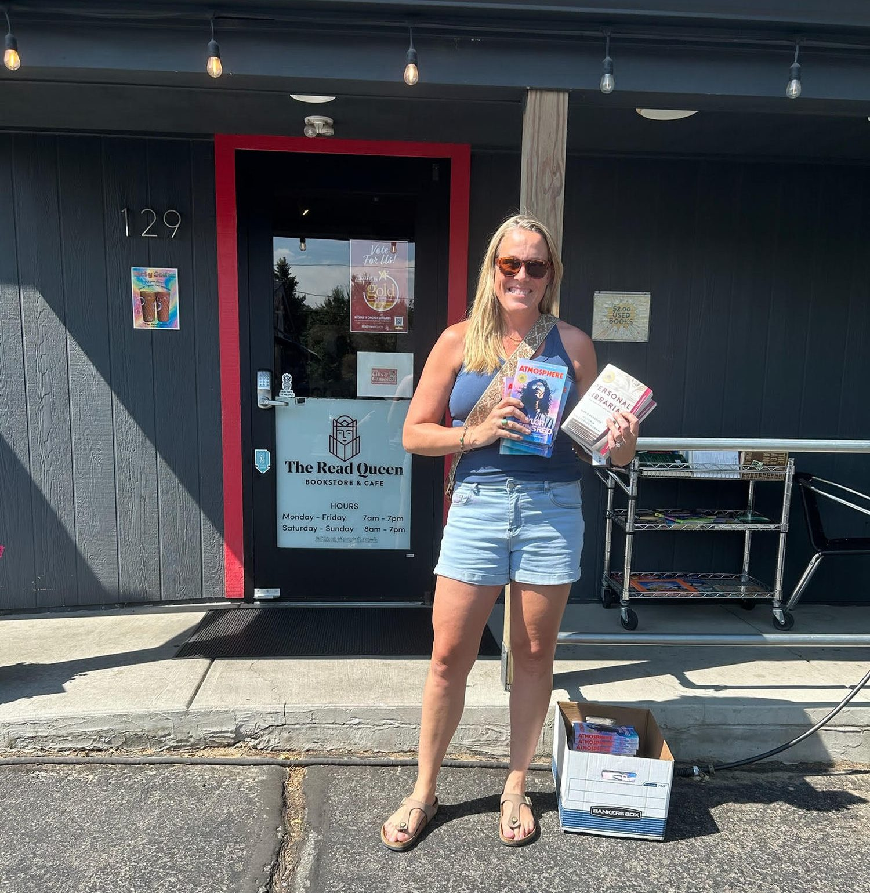

Stories connect us.
Gathered Pages Collective connects women through the power of shared stories, creating spaces where every woman can find connection, belonging, and the confidence to grow.
Our story

At Gathered Pages Collective, we believe stories have the power to bring women together.
Reading a great book is meaningful, but sharing that experience with others is transformative. Through honest conversation and shared perspectives, women find connection, encouragement, and the reminder that they are not alone.
Unfortunately, those opportunities aren’t equally available to everyone.
Women navigating financial hardship, domestic violence, illness, recovery, grief, single parenthood, incarceration, caregiving responsibilities, or other major life transitions often experience profound isolation. Research consistently shows that meaningful relationships and a sense of belonging are essential to resilience and well-being, yet many women lack access to affordable, welcoming communities where they can simply gather, reflect, and connect.
That’s where Gathered Pages Collective comes in.
We create opportunities for women to experience the connection and belonging that come from reading together. By partnering with shelters, recovery programs, transitional housing organizations, correctional facilities, community nonprofits, and other trusted organizations, we provide thoughtfully curated book club experiences at no cost to participants.
Every decision we make reflects our belief in women supporting women. We intentionally feature books written by women wherever possible, partner with women-owned businesses to create the journals and gifts included in our experiences, and invest in female entrepreneurs whose work aligns with our mission. In doing so, we create a ripple effect — supporting women as storytellers, business owners, community leaders, and readers.
We know a book alone doesn’t change a life. But a conversation can. A community can. A woman who feels seen, heard, and connected can.
Because stories don’t just help us understand the world — they help us find one another.
Stories connect us. Conversations strengthen us. Community transforms us.
Our mission is broad and welcoming on purpose. Our values are where we say out loud how we intend to keep it — why we look for women authors first, why the journal in the box came from a woman’s studio, and why none of it costs the women who receive it anything.
What we value
Six commitments, and each one is a decision we have already had to make.
Our board
Three women who agreed to build this with our founder.
- Tiffany AndersonBoard member
- Amber StoryBoard member
- Crystal GippeBoard member
- Jamie DickinsonFounder
Every box begins a conversation. Help us send the next one.
A gift covers a book by a woman author, a journal and pen from a woman-owned maker, a card naming the women-owned businesses her kit came from, and the guide that lets a facilitator run the whole club without training. If you would rather give your time than your money, introduce us to a group.